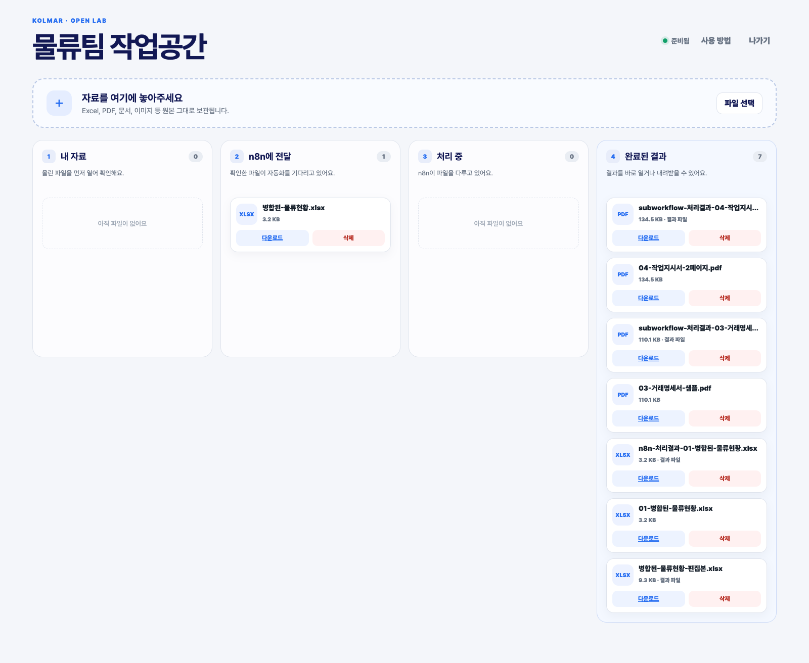
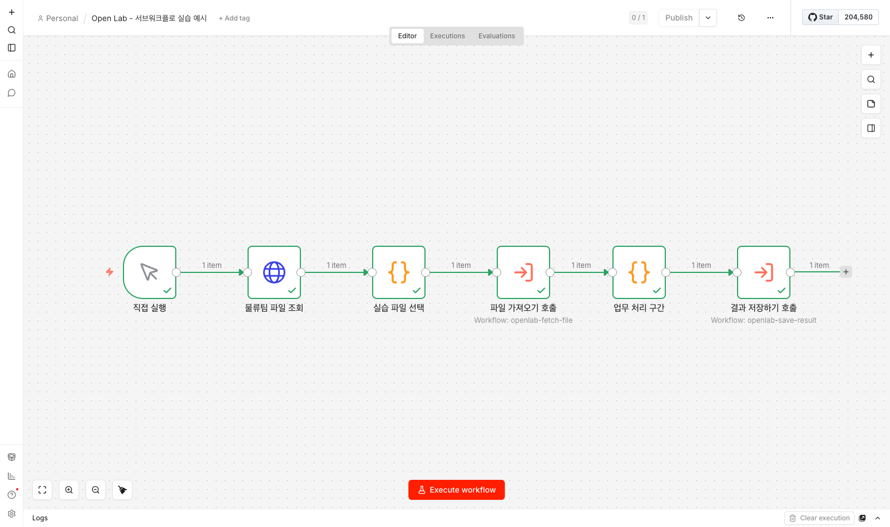
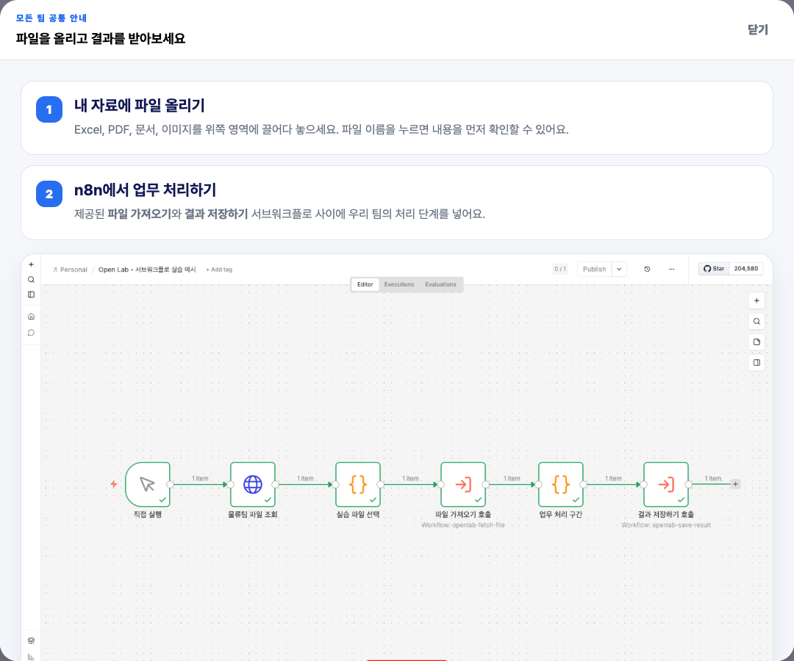
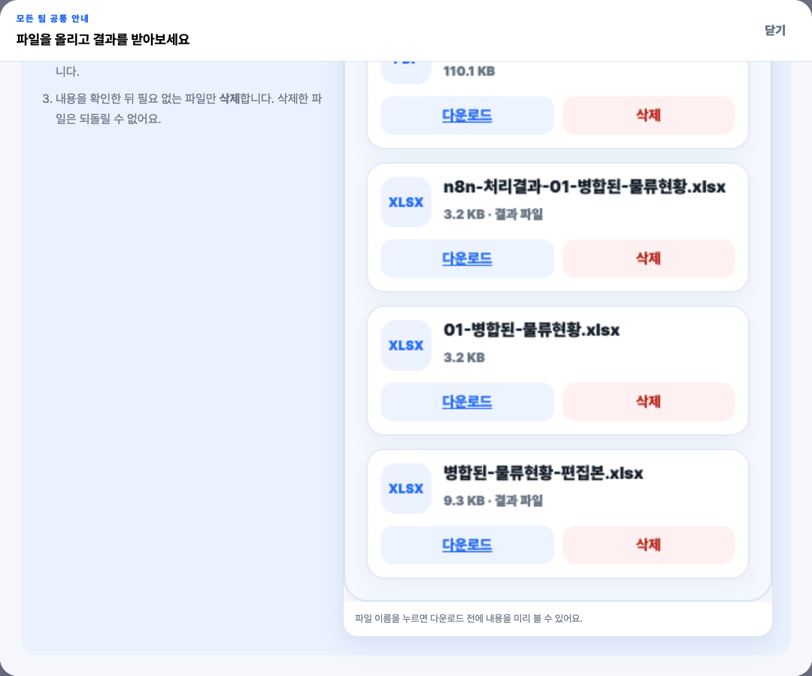

Kolmar Open Lab · Local Verification
파일을 보고, n8n에서 처리하고, 다시 내려받는 실습 흐름
참가자가 API 주소나 인증키를 다루지 않도록 파일 입출력을 서브워크플로로 감쌌습니다. 실제 물류팀 PDF를 사용해 로컬 n8n 왕복과 결과 다운로드 화면까지 검증했습니다.
로컬 왕복 검증 완료검증 결과
2개재사용 서브워크플로
112,790 B실제 PDF 왕복 크기
일치원본·결과 SHA-256
6/6호출 워크플로 성공 노드
판단: 실습 페이지와 n8n 사이의 파일 왕복 경로는 사용할 수 있습니다. 현재 가운데 `업무 처리 구간`은 원본 바이너리를 유지하는 연결 검증 단계이며, 교육에서는 여기에 팀별 Excel·PDF 처리 노드를 넣습니다.
참가자에게 보이는 경험

서브워크플로 구성
Open Lab - 파일 가져오기
입력으로 받은 파일 하나를 처리 중으로 표시하고 binary로 반환합니다.
- 입력:
team,fileId - 출력: 파일 정보 +
databinary - 인증과 API 주소는 환경변수에서 처리
Open Lab - 결과 저장하기
처리가 끝난 binary를 결과 파일로 올리고 원본과 연결합니다.
- 입력:
team,sourceId,resultName - 입력 파일:
databinary - 출력: 생성된 결과 파일 정보

실제 업로드와 처리 증거
| 항목 | 원본 | 결과 |
|---|---|---|
| 파일명 | 03-거래명세서-샘플.pdf | subworkflow-처리결과-03-거래명세서-샘플.pdf |
| 파일 ID | 26ef90e2…e979 | fe3d5ba4…971f |
| 크기 | 112,790 bytes | 112,790 bytes |
| SHA-256 | a48aa337…0308dcd0 일치 | |
| 연결 상태 | source | sourceId로 원본 연결 완료 |
실습 페이지 공통 안내
모든 팀의 상단 `사용 방법` 버튼에서 같은 안내를 엽니다. 설명만 두는 대신 실제 성공 화면을 함께 보여줍니다.


콜마 n8n에 적용할 때
관리자가 한 번 할 일
- 세 워크플로 JSON 가져오기
- API Origin과 Bearer 키를 안전한 Credential 또는 환경 설정으로 연결
- 두 서브워크플로 게시
- 콜마 n8n에서 공개 작업공간 HTTPS 접근 확인
참가자가 할 일
- 예시 호출 워크플로 복사
- 팀과 대상 파일 선택
- `업무 처리 구간`에 과제 노드 작성
- 결과 저장 호출 후 실습 페이지에서 다운로드
남은 실제 검증: 콜마 n8n에 워크플로를 가져올 권한, 외부 HTTPS 호출 허용 여부, Credential 생성 방식은 고객 환경에서 확인해야 합니다. 로컬 성공만으로 고객 방화벽 통과를 확정하지는 않습니다.